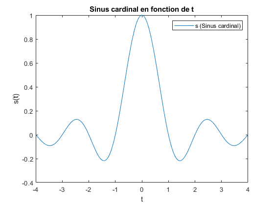
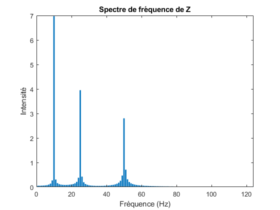

Contents
Exercice 1: Signaux simples
close all; clear all; clc;
1.1.
s = @(t) sin(pi*t) ./ (pi*t); t = linspace(-4, 4, 1000); plot(t, s(t)); title('Sinus cardinal en fonction de t'); xlabel('t'); ylabel('s(t)'); legend('s (Sinus cardinal)'); % Réponse question: Le signal s est connu sous le nom de sinus cardinal.
1.2.
close all; clear all; clc; s1 = @(t) sin(t); s2 = @(t) sin(3*t) / 3; s3 = @(t) sin(5*t) / 5; t = linspace(-2, 2, 500); hold on; plot(t, s1(t)) plot(t, s2(t)) plot(t, s3(t)) title('Superposition des signaux s1 s2 et s3 en fonction de t'); xlabel('t'); ylabel('Signaux s1(t) s2(t) et s3(t)'); legend('s1', 's2', 's3');
1.3.
close all; clear all; clc; s1 = @(t) sin(t); s2 = @(t) sin(3*t) / 3; s3 = @(t) sin(5*t) / 5; somme = @(t) s1(t) + s2(t) + s3(t); t = linspace(-2, 2, 500); hold on; plot(t, s1(t), '--') plot(t, s2(t), '--') plot(t, s3(t), '--') plot(t, somme(t), 'LineWidth', 2) title('Superposition des signaux s1 s2 s3 et leur somme en fonction de t'); xlabel('t'); ylabel('Signaux s1 s2 s3 et leur somme'); legend('s1', 's2', 's3', 'somme');
1.4.
close all; clear all; clc; % Calcul de la fonction S50(t) t = linspace(-2, 2, 500); S50 = zeros(1, length(t)); for i=0:500 k = 2*i + 1; h = sin(k*t) / k; S50 = (S50 + h); end S50 = 0.5 + (2/pi)* S50; figure('Name', 'Approximation de la fonction échelon'); plot(t, S50); title('Approximation de la fonction échelon'); xlabel('t (s)'); ylabel('S50(t)'); % Réponse question: Le signal S50(t) semble approximer la fonction échelon.
Exercice 2: Échantillonnage
close all; clear all; clc;
2.1.
Le signal Y(t) peut être décomposé en trois signaux:
Y_1 = @(t) 2*sin(165*pi*t); Y_2 = @(t) 13*cos(6*pi*t); Y_3 = @(t) -3*cos(80*pi*t); % À l'aide de s(t) = A * sin(w*t + phi) et f = w / 2pi on peut trouver % trois fréquences dans le signal Y(t): % Y_1 -> 165pi / 2pi = 82.5 Hz % Y_2 -> 6pi / 2pi = 3 Hz % Y_3 -> 80pi / 2pi = 40 Hz
2.2.
Y = @(t) Y_1(t) + Y_2(t) + Y_3(t); figure('pos', [10,10,600,900]); type subplot_frequence_echantillonnage.m; subplot_frequence_echantillonnage(1, 20, Y); subplot_frequence_echantillonnage(2, 75, Y); subplot_frequence_echantillonnage(3, 100, Y); subplot_frequence_echantillonnage(4, 160, Y); subplot_frequence_echantillonnage(5, 180, Y); subplot_frequence_echantillonnage(6, 330, Y);
function [] = subplot_frequence_echantillonnage(position, frequence, Y)
% Cette fonction ajoute un subplot à la figure regroupant les six
% représentations de Y(t) avec différentes fréquences d'échantillonage
subplot(6,1,position);
t = linspace(0, 1, frequence);
plot(t, Y(t));
ylim([-20, 20]);
title(strcat({'Y en fonction de t pour une fréquence d''échantillonnage de '}, int2str(frequence), {' Hz'}));
xlabel('t');
ylabel('Y(t)');
end
2.3.
% Plus la fréquence d'échantillonnage est élevée, plus l'échantillon épouse % le réel signal.
2.4.
% Le théorème de Nyquist-Shannon stipule que la fréquence d'échantillonnage % doit être au moins égale au double de la fréquence maximale du signal % analogique. % Ici la fréquence maximale du signal Y(t) est: % f_max = max(82.5, 3, 40) = 82.5 Hz % Réponse question: Donc les fréquences 180 Hz et 330 Hz respectent la condition >= 2*82.5 % Hz. % Réponse question: Un compromis doit être fait entre la précision du signal % reconstitué et la quantité de données recueillies. % En effet, si la fréquence d'échantillonage est élevée il sera % possible d'échantilloner des fréquences élevées. De plus, la latence du % signal sera diminuée. Cependant, si la fréquence d'échantillonage est % élevée une plus grande quantité de données devra être recueillie afin % de représenter ce signal.
Exercice 3: Analyse spectrale
close all; clear all; clc;
3.1.
Fe = 250; Y_1 = @(t) 7*sin(2*pi*10*t); Y_2 = @(t) 4*sin(2*pi*25*t + pi/3); Y_3 = @(t) 3*cos(2*pi*50*t); t = linspace(0, 1, Fe); hold on; plot(t, Y_1(t)); plot(t, Y_2(t)); plot(t, Y_3(t)); title('Signaux Y_1, Y_2, et Y_3 en fonction de t'); xlabel('t'); ylabel('Signaux Y_1, Y_2, et Y_3'); legend('Y_1', 'Y_2', 'Y_3');
3.2.
% Réponse question: % Période déterminée graphiquement: % T_1_graph = 0,17671 - 0,076305 = 0,100405 % T_2_graph = 0,10442 - 0,064257 = 0,040163 % T_3_graph = 0,068273 - 0,048193 = 0,02008 % Période déterminée théoriquement: % À l'aide de f = w/2pi et T = 1/f nous obtenons T = 2pi / w % T_1_théo = 2pi / (2pi*10) = 0,1 % T_2_théo = 2pi / (2pi*25) = 0,04 % T_3_théo = 2pi / (2pi*50) = 0,02 % Comparaison Période déterminée graphiquement vs Période déterminée % théoriquement: % T_1_théo_vs_graph = |0,1 - 0,100405| / 0,1 = 0.405% erreur % T_2_théo_vs_graph = |0,04 - 0,040163| / 0,04 = 0.4075% erreur % T_3_théo_vs_graph = |0,02 - 0,02008| / 0,02 = 0.4% erreur
3.3.
clf; Z = @(t) Y_1(t) + Y_2(t) + Y_3(t); plot(t, Z(t)); title('Somme des signaux Y1, Y2 et Y3 en fonction de t'); xlabel('t'); ylabel('Somme des signaux Y1, Y2 et Y3'); legend('Z'); % Réponse question: % À l'aide de f = 1 / T où T est : % T = 0,026908 - 0,068273 = 0,200807 % La fréquence de Z(t) semble être de 1 / 0,200807 = 4,98 Hz
3.4.
% Réponse question: % Le spectre de fréquence de chacun des signaux présente l'intensité du % signal en fonction de la fréquence. Il nous est possible de constater que % chaque spectre de fréquence a une fréquence proéminente. Cette fréquence % proéminente correspond bel et bien à la fréquence théorique de chacun des % signaux. De plus, l'intensité du signal représenté dans chacun des % spectres de fréquence correspond aussi à l'intensité théorique de chacun % des signaux.
3.4.1.
clf; Y_1_fft = fft(Y_1(t)); bar(0:249, 2*abs(Y_1_fft)/length(Y_1_fft)); xlim([0 124]) title('Spectre de fréquence de Y1'); ylabel('Intensité'); xlabel('Fréquence');
3.4.2.
clf; Y_2_fft = fft(Y_2(t)); bar(0:249, 2*abs(Y_2_fft)/length(Y_2_fft)); xlim([0 124]) title('Spectre de fréquence de Y2'); ylabel('Intensité'); xlabel('Fréquence');
3.4.3.
clf; Y_3_fft = fft(Y_3(t)); bar(0:249, 2*abs(Y_3_fft)/length(Y_3_fft)); xlim([0 124]) title('Spectre de fréquence de Y3'); ylabel('Intensité'); xlabel('Fréquence');
3.5.
clf; audio_fft = fft(Z(t)); bar(0:249, 2*abs(audio_fft)/length(audio_fft)); xlim([0 124]) title('Spectre de fréquence de Z'); ylabel('Intensité'); xlabel('Fréquence (Hz)'); % Réponse question: % Ce spectre de fréquence présente l'intensité du signal en fonction de la % fréquence. Il nous est possible de constater qu'il y a trois fréquences % proéminentes. Ces fréquences ainsi que leur intensité correspondent aux % signaux Y_1(t), Y_2(t), et Y_3(t) qui composent le signal Z(t) analysé.
Exercice 4: Filtrage audio
close all; clear all; clc;
4.1.
[Data,Fe] = audioread('audio.wav'); player = audioplayer(Data, Fe); % play(player); % Perturbation #1: Son constant à haute fréquence (son aigu) % Perturbation #2: Son constant à base fréquence (son grave)
4.2.
Calcul taille des données audio recueillies
L = length(Data); % Obtenir vecteur représentant la plage de fréquences du fichier audio f = Fe*(0:(L/2))/L; % Obtenir fft du signal audio audio_fft = fft(Data); % Seulement prendre les valeur positives + normaliser les données all_data = abs(audio_fft/L); % Sélectionner seulement la moitié des firt_half = all_data(1:L/2+1); % Doubler amplitude des signaux de la première moitié puisque les signaux % de la seconde moitié ont été groupé au signaux de la première partie. firt_half(2:end-1) = 2*firt_half(2:end-1); plot(f,firt_half) title('TDF du signal audio.wav') xlabel('Fréquence') ylabel('Intensité (Hz)')
4.3.
% Réponse question: En observant une fréquence de 1244.69 Hz il nous est % possible d'affirmer que cette fréquence correspond à un ré# ou mib.
4.4.
% Création du filtre et application de celui-ci sur le fichier audio lpf = fir1(128, 1240 / Fe, "low"); lpf_data = filter(lpf, 1, Data); % Affichage du nouveau signal sonore (non demandé) filtered_data_fft = fft(lpf_data); all_data = abs(filtered_data_fft/L); firt_half = all_data(1:L/2+1); firt_half(2:end-1) = 2*firt_half(2:end-1); plot(f,firt_half) title('TDF du signal audio.wav avec lowpass filter') xlabel('Fréquence') ylabel('Intensité (Hz)') audiowrite('new_audio_with_low_pass.wav', lpf_data, Fe); % Réponse question: Nous perdons toutes les fréquences supérieure à 1240 % Hz et donc certaines notes de la musique. % Nous pourrions créer un filtre pour seulement un petit ensemble de % fréquence ce qui limiterait les pertes.
4.5.
highPassFilter_Chebyshev = fir1(128,250/Fe,'high',chebwin(128+1, 30)); highPassFilter_Hamming = fir1(128,250/Fe,'high', hamming(128+1)); highPassFilter_Blackman = fir1(128,250/Fe,'high',blackman(128+1));
4.6.
HD1 = dfilt.dffir(highPassFilter_Chebyshev); HD2 = dfilt.dffir(highPassFilter_Hamming); HD3 = dfilt.dffir(highPassFilter_Blackman); [H, w] = freqz([HD1, HD2, HD3]); figure(2) subplot(2,1,1); plot(w/pi,20*log10(abs(H))); legend('Chebyshev', 'Hamming', 'Blackman'); title('Réponse fréquentielle') xlabel('Normalized Frequency (x pi rad/sample)') ylabel('Magnitude (dB)') grid on subplot(2,1,2); plot(w, angle(H)); title('Phase') xlabel('Normalized Frequency (x pi rad/sample)') ylabel('Phase (radians)') grid on
4.7.
[Data,Fe] = audioread('new_audio_with_low_pass.wav'); hpf_Chebyshev = filter(highPassFilter_Chebyshev, 1, Data); hpf_Hamming = filter(highPassFilter_Hamming, 1, Data); hpf_Blackman = filter(highPassFilter_Blackman, 1, Data); audiowrite('Chebyshev.wav', hpf_Chebyshev, Fe); audiowrite('Hamming.wav', hpf_Chebyshev, Fe); audiowrite('Blackman.wav', hpf_Chebyshev, Fe); % Nous remarquons que le son de la fréquence basse s'est vu atténué. % Nous perdons de l'intensité pour toutes les fréquences inférieures à la % fréquence de coupure et donc certaines notes de la musique. Le signal % restauré sera donc moins fort au niveau des fréquences inférieures à la % fréquence de coupure, soit 250 Hz.
4.8.
type plotSpectreFrequence.m; % Les spectres correspondent à ce que nous avons entendu. Effectivement, le % son très fort en basse fréquence est encore audible, et on voit sur le % spectre qu'il reste encore plus fort que le reste du signal. Par contre, % son intensité est plus faible que le signal original.
function [] = plotSpectreFrequence(nomFichier)
[Data,Fe] = audioread(nomFichier);
% Calcul taille des données audio recueillies
L = length(Data);
% Obtenir vecteur représentant la plage de fréquences du fichier audio
f = Fe*(0:(L/2))/L;
% Obtenir fft du signal audio
audio_fft = fft(Data);
% Seulement prendre les valeur positives + normaliser les données
all_data = abs(audio_fft/L);
% Sélectionner seulement la moitié des
firt_half = all_data(1:L/2+1);
% Doubler amplitude des signaux de la première moitié puisque les signaux
% de la seconde moitié ont été groupé au signaux de la première partie.
firt_half(2:end-1) = 2*firt_half(2:end-1);
plot(f,firt_half)
title(strcat({'TDF du signal '}, nomFichier));
xlabel('Fréquence')
ylabel('Intensité')
end
4.8.1.
clf;
plotSpectreFrequence('Chebyshev.wav');
4.8.2.
clf;
plotSpectreFrequence('Hamming.wav');
4.8.3.
clf;
plotSpectreFrequence('Blackman.wav');